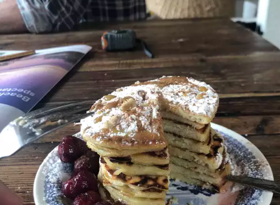

Pancakes

Description
Pancakes. Just like your mother used to make!
Ingredients
- 1/2 Cup of All Purpose Flour
- 3 1/2 tsp of Baking Powder
- 1/4 tsp of Salt (or more)
- 1 tbsp of White Sugar
- 1 1/4 cups of Milk
- 1 Egg
- 3 tbsp of Butter, melted
Steps
- Sift the flour, baking powder, salt and sugar together.
- Form a well in the middle of the dry mixture.
- Pour the milk, egg and melted butter into the well, mixing until smooth.
- Head a frying pan to medium heat.
- Pour a small plate sized portion of the mixture into the pan.
- Cook until you see small bubbles throughout, then flip.
- Cook until golden brown, then leave to stand for 1-2min(s).
- Serve with maple syrup, or your preferred alternative toppings.
- Enjoy!